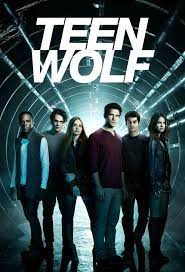

Séries favoritas
2# Teen Wolf 
1# The Mandalorian  3# The 100
3# The 100 
3# The 100
Me chamo Giuseppe Pallazini, tenho 19 anos e tive contato com minha primeira linguagem de programação (Python) aos 12 anos, porém deixei de lado e fui voltar a estudar novamente somente aos 17.
Em 2022, lá em SP, Realizei um curso técnico de 1200 horas de Informática no Instituto Social Nossa Senhora de Fátima, mais conhecido como: Frei.
Lá aprendi diversas coisas, tanto da parte de software, como criação de sistemas utilizando React e Node, quanto de hardware e rede como criação e hospedagem de servidores
A história dele é bem bonita... Um frei fundou há 52 anos esse instituto, no qual foi crescendo cada vez mais e hoje concorre diretamente com o Senac e é conhecido principalmente por ser um instituto com aprendizagem muito boa e por ser um projeto sem fins lucrativos
3# The 100
Depende da época, atualmente são essas